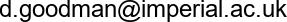

Dan Goodman

- 
- +44 (0)20 7594 6264
- @neuralreckoning
- Google Scholar
-
Room 1001
Department of Electrical and Electronic Engineering
Imperial College
Exhibition Road
London SW7 2AZ
I am a (senior) lecturer (US equivalent: associate professor) in the Intelligent Systems and Networks group in the Department of Electrical and Electronic Engineering at Imperial College London.
The aim of my research is to uncover the principles underlying neural computation. My approach is to look at tasks that are complex and difficult enough to require a brain to solve them, but simple enough to be tractable. This includes things like understanding how we localise sounds, make sense of speech in noisy backgrounds, etc. I am particularly interested in neural computations with precisely timed spiking neural networks. This is a form of computation specific to the brain, being radically different to both digital and analogue computation.
I have developed several software tools for working with spiking neurons, notably the "Brian" spiking neural network simulator.
I am also interested in open science and making science better. I host a list of freely available computational neuroscience resources. I co-founded Neuromatch with Konrad Kording. I'm an editor for the open access journals eLife, Neurons, Behavior, Data analysis, and Theory, and PCI Circuit Neuroscience.
A few people may also be interested in my former career as a mathematician.